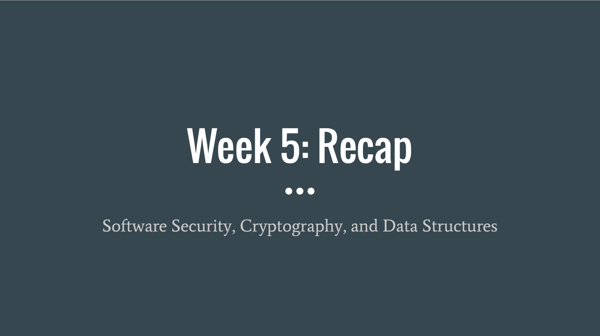

Orientation day: Formal introductions, internship layout, and intern expectations. We were given the task in choosing three different courses from Coursera.org to create a foundation for which we will base our two labs and project.
I chose the following courses: Software security, Cryptography, and Data Structures.
We discussed and set up a structured calender of our tasks as interns and their approximated due dates. I started to learn the principles of memory safety, cryptography, and the fundamentals of arrays/single linked lists.
Press for Week 2 Recap slides
For this week I have created another presentation re-caping on what I have learned from my course material. Which has been diving deeper into dealing with vunerabilities of lower-level programming(C/C++) and how to minimize attacks. While lower-level languages are still popular and efficient in the sense that they have greater ability in memory management and greater control over lower-level hardware, they are still not memory safe like other higher-level languages (Java, Python, Ruby, etc.). I also learned about the principles of modern cryptography and it's limitations, security assurance, and the mathematical probability behind every encryption scheme
I created a rough draft of my first lab that encompasses everything that has been learned.
Press for Week 3 Recap slides
In this week I finished my final draft of Lab 1
This lab helps visualize the difference between a memory safe language and a language that is not memory safe. In addition, it helps in creating a simple program that simulates the shift-cipher private-key scheme.(Cryptography)
In addition to the completetion of Lab 1, I learned about the "One-time pad scheme" that has proven to have perfect secrecy. Also, I understood the fundamentals of web security and the vulnerabilities it encounters.
Press for Week 4 Recap slides
In this week I learned about different attacks/defenses over the web. While the web is not susceptible to memory attacks and is a type-safe form of programming, it still has vulnerabilities. These vulnerabilities tend to occur in "sanitization" of the code that the program is written in. This means that an attacker could use this to their advantage and inject malicious code into your program. In addition, I learned about the drawbacks of the one time pad scheme which proves to have perfect secrecy. Also, I learned another data structure, the tree and it's terminology.
Press for Week 5 Recap slides
In this week I learned about CSRF(Cross-Site Request Forgery) and XSS(Cross-Site Scripting) attacks from Software Security. To take steps in defending against these kinds of attacks, one must be careful not to press on any random links and stay on safe and secure websites where session cookies cannot be obtained from malicious attackers. In Cryptography, I learned about pseudorandomness in which is more of a concept regarding a property of string distribution. In addition, I was introduced to pseudorandom(number) generators (PRNGs/PRG) which in short are efficient algorithms that expands inputs into longer, pseudorandom output. For Data Structures, I learned about the different methods of traversing a tree.
For my second lab I am creating a password generator that tests the strength of a password by passing important tests such as plaintext length and avoiding common pharses.
Press for Week 6 Recap slides
For these couple of weeks I have been working on my second lab that will be expanded more on as a final project as well. My second lab consists of creating a password generator that either adds a suggestive and strong password, or it also allows you to test your own password with defined test cases that are designed to test the strength of the password. This lab encompasses some of the fundamental basics of software security, starting with creating strong and secure passwords that will hold better against attackers using brute-force and dictionary attacks.
I also finished myLab 2 in which helps guide you in creating a password generator GUI that helps in creating strong and secure passwords.
Click this link for my GitHub page that leads to my lab 2 project folder with a executable jar file (MUST DOWNLOAD JAVA SDK BEFORE EXECUTING).